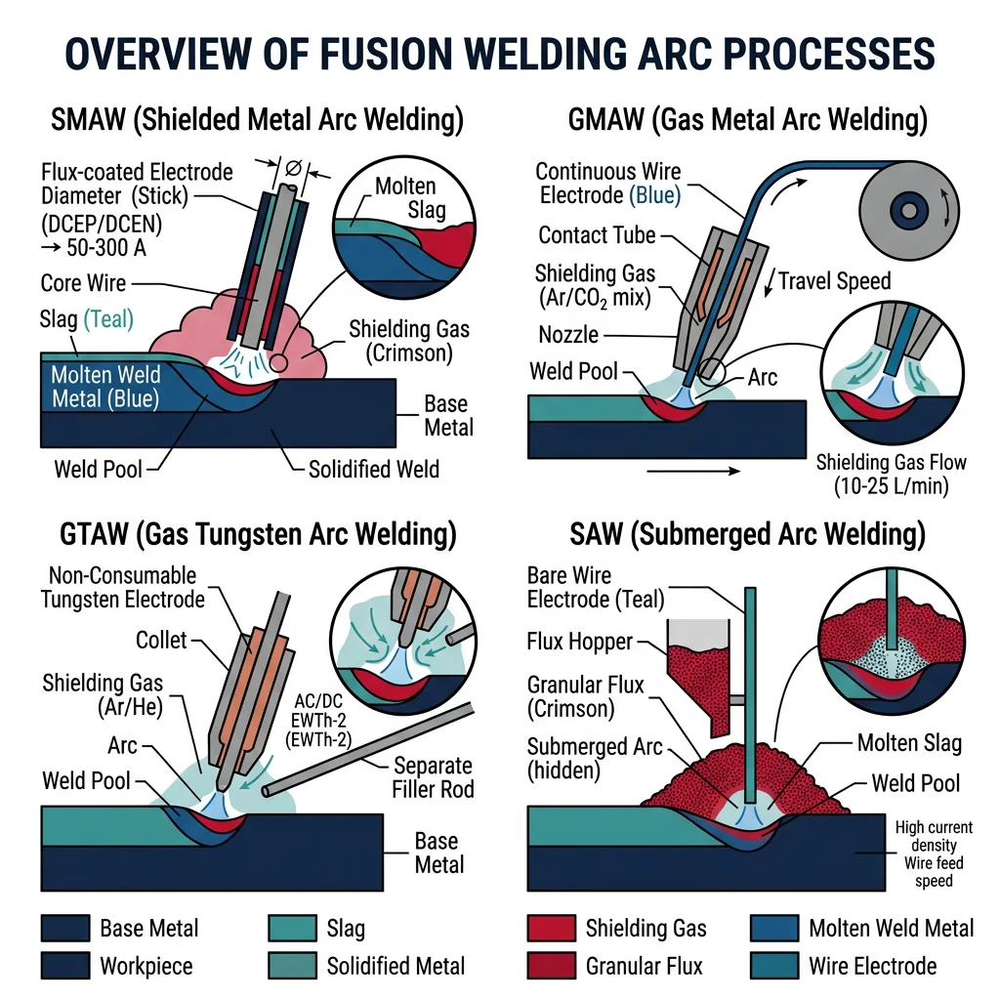
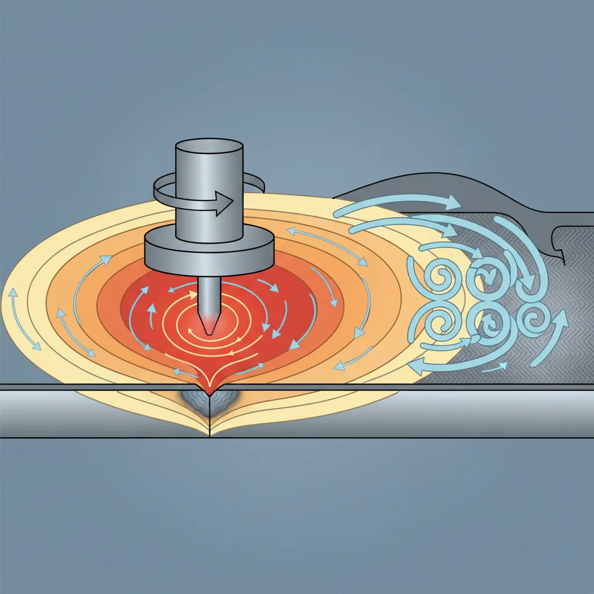
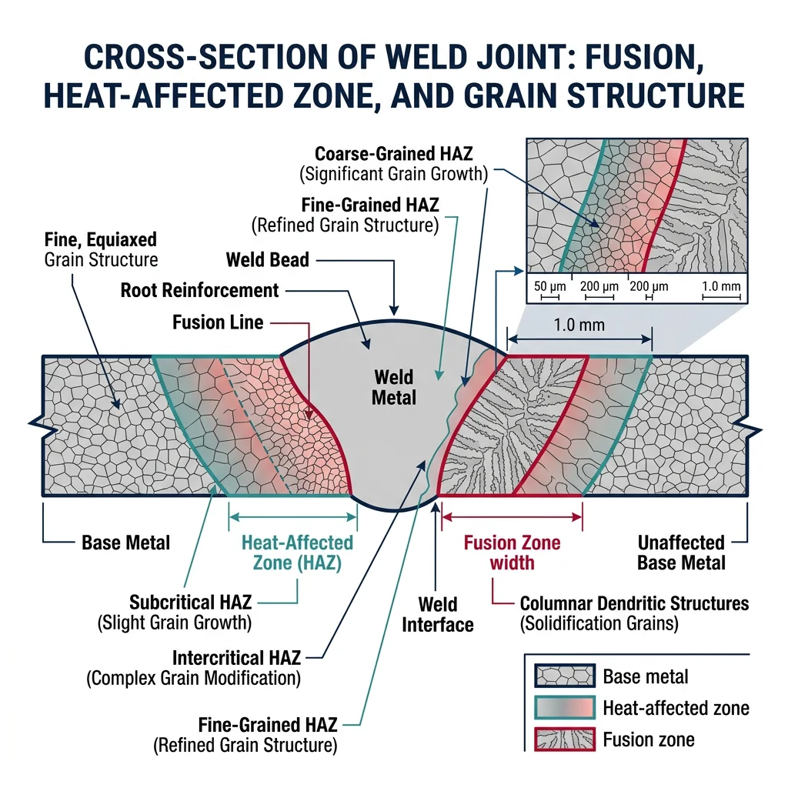
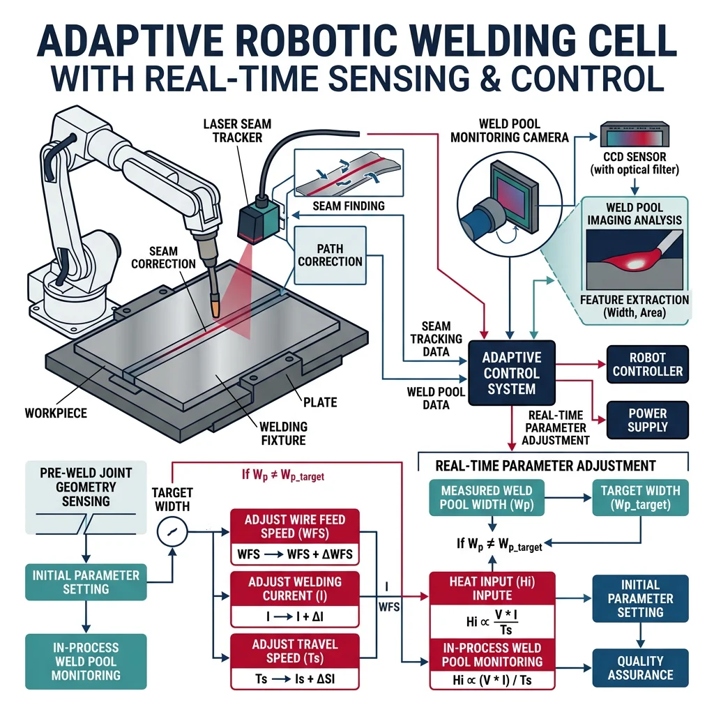
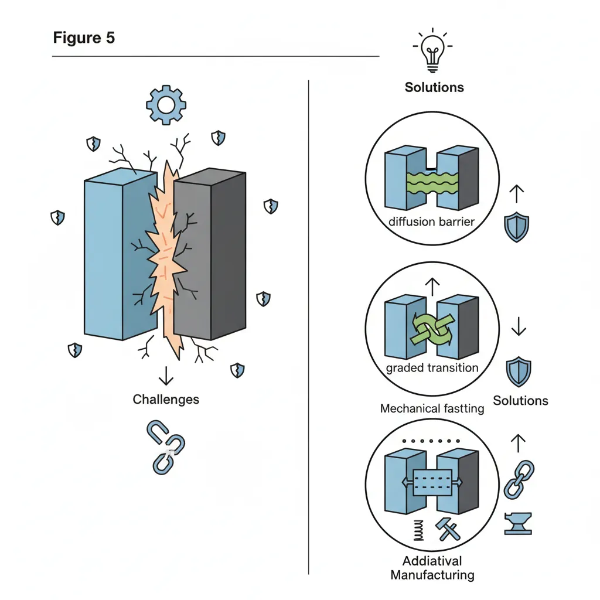

Fusion Welding Processes
Manufacturing Mastery
Manufacturing Systems & Process Foundations
Process taxonomy, physics, DFM/DFA, production economics, Theory of ConstraintsCasting, Forging & Metal Forming
Sand/investment/die casting, open/closed-die forging, rolling, extrusion, deep drawingMachining & CNC Technology
Cutting mechanics, tool materials, GD&T, multi-axis machining, high-speed machining, CAMWelding, Joining & Assembly
Arc/MIG/TIG/laser/friction stir welding, brazing, adhesive bonding, weld metallurgyAdditive Manufacturing & Hybrid Processes
PBF, DED, binder jetting, topology optimization, in-situ monitoringQuality Control, Metrology & Inspection
SPC, control charts, CMM, NDT, surface metrology, reliabilityLean Manufacturing & Operational Excellence
5S, Kaizen, VSM, JIT, Kanban, Six Sigma, OEEManufacturing Automation & Robotics
Industrial robotics, PLC, sensors, cobots, vision systems, safetyIndustry 4.0 & Smart Factories
CPS, IIoT, digital twins, predictive maintenance, MES, cloud manufacturingManufacturing Economics & Strategy
Cost modeling, capital investment, facility layout, global supply chainsSustainability & Green Manufacturing
LCA, circular economy, energy efficiency, carbon footprint reductionAdvanced & Frontier Manufacturing
Nano-manufacturing, semiconductor fabrication, bio-manufacturing, autonomous systemsWelding is the critical manufacturing process that makes modern civilization possible — from skyscrapers to ships, pipelines to power plants, automobiles to aircraft. Over 50% of global GDP depends on welded structures. Unlike casting and machining, welding permanently fuses materials by creating atomic bonds across a joint, producing structures that can be stronger than the parent material.

Arc welding processes use an electric arc (3,000-20,000°C) as the heat source. The arc forms between an electrode and the workpiece, melting both to create the weld pool. Arc welding accounts for ~60% of all industrial welding.
| Process | Abbreviation | Heat Source | Shielding | Typical Applications |
|---|---|---|---|---|
| Shielded Metal Arc (Stick) | SMAW | Consumable electrode arc | Flux coating → slag + gas | Structural steel, pipelines, field repair |
| Gas Metal Arc (MIG) | GMAW | Continuous wire arc | External gas (Ar, CO₂, mix) | Automotive body, fabrication, sheet metal |
| Gas Tungsten Arc (TIG) | GTAW | Non-consumable W electrode | Argon or Helium | Aerospace, nuclear, food equipment, thin stock |
| Flux-Cored Arc | FCAW | Tubular wire with flux core | Self-shielded or gas-shielded | Structural steel, shipbuilding, outdoor |
| Submerged Arc | SAW | Wire arc under flux blanket | Granular flux cover | Thick plate, pressure vessels, pipe |
Case Study: Shipbuilding — World's Largest Welded Structures
A modern container ship (400m long, 60m wide) contains ~1,000 km of weld seams:
- Primary process: SAW for thick hull plate (20-40mm steel), deposition rate 10-25 kg/hour
- Secondary: FCAW for structural frames, GMAW for thin plate sections
- Automation: 70% of welding is robotic/automated in modern shipyards (Hyundai, Samsung, DSME)
- Quality: 100% radiographic (X-ray) inspection of all critical hull seams
Laser & Electron Beam Welding
Laser welding focuses a high-power laser beam (1-20 kW) to produce an extremely narrow, deep weld with minimal heat input. The beam creates a "keyhole" — a vapor channel that allows penetration depths of 2-25mm in a single pass with negligible distortion.
Laser Beam Welding (LBW)
- Power: 1-20 kW (CO₂, fiber, disc lasers)
- Speed: 1-10 m/min
- Penetration: 0.5-25 mm
- HAZ: 0.5-2 mm (extremely narrow)
- Best for: Automotive body-in-white, tailored blanks, battery tabs
Electron Beam Welding (EBW)
- Power: 1-100 kW (vacuum chamber required)
- Penetration: Up to 200 mm in single pass
- HAZ: 0.2-1 mm (narrowest of all processes)
- Best for: Aerospace titanium, nuclear reactor components
Resistance & Plasma Welding
Resistance welding passes high current (5,000-100,000 A) through overlapping sheets — the electrical resistance at the interface generates localized heat, melting a small "nugget" that fuses the sheets. No filler metal or shielding gas needed.
Plasma Arc Welding (PAW) is an advanced variant of TIG welding where the arc is constricted through a small copper nozzle, creating a high-energy plasma jet at 20,000-30,000°C. The constricted arc provides deeper penetration (keyhole mode) and better arc stability than conventional TIG, making it ideal for automated welding of stainless steel, titanium, and nickel alloys in aerospace and nuclear applications.
Solid-State & Advanced Joining
Solid-state welding processes create joints without melting the base material. They rely on plastic deformation, diffusion, and intimate contact at elevated temperature to achieve atomic bonding. Because no melting occurs, solid-state welds avoid solidification defects (porosity, hot cracking, segregation) — producing joints with properties equal to or exceeding the base metal.

Friction Stir Welding (FSW), invented by TWI in 1991, is the most significant welding innovation in decades. A rotating non-consumable tool plunges into the joint and traverses along it — frictional heat softens (but doesn't melt) the material while mechanically stirring it across the joint.
Case Study: SpaceX Falcon 9 — FSW in Rocket Manufacturing
SpaceX uses FSW extensively in Falcon 9 and Starship production:
- Application: Circumferential and longitudinal welds of 2219-T87 aluminum propellant tanks (3.7m diameter)
- Why FSW? Fusion welding of 2xxx aluminum creates hot cracks. FSW avoids melting — no porosity, no cracking, no loss of temper
- Joint efficiency: 85-95% of base metal strength (vs 60-70% for TIG welded 2219)
- Quality: NASA requires 100% phased-array ultrasonic inspection of every FSW seam
Brazing, Soldering & Diffusion Bonding
Brazing joins metals using a filler that melts above 450°C but below the base metal's melting point. The liquid filler is drawn into the tight-fitting joint by capillary action, producing clean, strong joints without distortion.
Diffusion bonding presses two clean surfaces together at elevated temperature (50-80% of melting point) under pressure for extended time (minutes to hours). Atomic diffusion across the interface creates a bond with no filler material. Used for titanium aerospace structures and heat exchangers with thousands of micro-channels.
| Joining Method | Temperature | Joint Strength | Dissimilar Metals? | Key Advantage |
|---|---|---|---|---|
| Brazing | 450-1,150°C | Strong | Excellent | Capillary flow fills complex joints; no distortion |
| Soldering | Below 450°C | Moderate | Yes | Low temperature; electrical connections; reworkable |
| Diffusion Bonding | 500-1,000°C | Equal to base metal | Yes | No filler; perfect for micro-channels and laminates |
Adhesive Bonding & Mechanical Fastening
Adhesive bonding has evolved from simple gluing to a structural joining technology used in aircraft (Airbus A380 GLARE panels), automotive (BMW i-Series CFRP structures), and electronics. Modern structural adhesives (epoxy, polyurethane, acrylic) achieve shear strengths of 20-40 MPa.
Weld Metallurgy & Quality
A weld joint is a miniature casting inside a heat-treated zone. Every fusion weld creates three distinct zones: the Fusion Zone (FZ) where metal melted and resolidified with cast-like columnar grains, the Heat-Affected Zone (HAZ) where base metal was heated above transformation temperature causing grain growth and phase changes, and the unaffected base metal beyond the thermal influence.

Residual Stresses & Distortion Control
Residual stresses in welds arise because the weld metal shrinks as it cools while being constrained by the surrounding cold base metal. These stresses can reach the yield strength of the material — creating a permanent state of tension in the weld and compression in the surrounding material.
| Distortion Control Method | Mechanism | When to Use |
|---|---|---|
| Pre-setting (pre-bending) | Parts positioned to anticipate distortion | Single-pass welds with predictable angular distortion |
| Balanced welding sequence | Alternate sides to balance shrinkage forces | Double-V joints, multi-pass welds |
| Back-step welding | Short welds in reverse direction reduce cumulative distortion | Long seam welds |
| Strongbacks & fixtures | Mechanical restraint during welding and cooling | Large fabrications, shipbuilding |
| Post-weld heat treatment (PWHT) | Stress relief at 550-700°C reduces residual stress by 80-90% | Pressure vessels, thick sections, high-strength steel |
Weld Defects & Inspection
Weld defects fall into surface defects and subsurface defects. Inspection methods are matched to defect type, material, and criticality level.
| Defect | Cause | Detection Method |
|---|---|---|
| Porosity | Gas entrapment (moisture, contamination) | Radiography (X-ray/gamma) |
| Lack of Fusion | Insufficient heat, wrong angle | Ultrasonic testing, radiography |
| Hot Cracking | Low-melting-point phases at grain boundaries | Dye penetrant, radiography |
| Cold (Hydrogen) Cracking | H₂ + residual stress + hard HAZ | Ultrasonic, may appear hours-days later |
| Undercut | Excessive current, wrong electrode angle | Visual inspection |
import numpy as np
# Carbon Equivalent & Preheat Temperature Estimation
# CE(IIW) = C + Mn/6 + (Cr+Mo+V)/5 + (Ni+Cu)/15
steels = {
"Mild Steel (A36)": {"C": 0.18, "Mn": 0.80, "Cr": 0.0, "Mo": 0.0, "V": 0.0, "Ni": 0.0, "Cu": 0.0},
"HSLA (A572 Gr.50)": {"C": 0.23, "Mn": 1.35, "Cr": 0.0, "Mo": 0.0, "V": 0.05, "Ni": 0.0, "Cu": 0.0},
"Quenched (A514)": {"C": 0.18, "Mn": 0.80, "Cr": 0.50, "Mo": 0.25, "V": 0.05, "Ni": 0.0, "Cu": 0.0},
"Pipeline (X70)": {"C": 0.07, "Mn": 1.65, "Cr": 0.05, "Mo": 0.15, "V": 0.06, "Ni": 0.15, "Cu": 0.20},
"Cr-Mo (2.25Cr-1Mo)": {"C": 0.12, "Mn": 0.50, "Cr": 2.25, "Mo": 1.00, "V": 0.0, "Ni": 0.0, "Cu": 0.0},
}
print("Weldability Analysis — Carbon Equivalent & Preheat")
print("=" * 72)
print(f"{'Steel':<24} {'CE(IIW)':<10} {'Weldability':<16} {'Preheat (°C)'}")
print("-" * 72)
for name, comp in steels.items():
CE = comp["C"] + comp["Mn"]/6 + (comp["Cr"]+comp["Mo"]+comp["V"])/5 + (comp["Ni"]+comp["Cu"])/15
if CE < 0.35:
weldability, preheat = "Excellent", "None required"
elif CE < 0.45:
weldability, preheat = "Good", "50-150"
elif CE < 0.55:
weldability, preheat = "Fair", "150-250"
else:
weldability, preheat = "Poor", "250-400"
print(f"{name:<24} {CE:<10.3f} {weldability:<16} {preheat}")
# Heat input calculation
print(f"\n--- Heat Input Calculation ---")
V_arc = 25 # Arc voltage (V)
I_arc = 200 # Arc current (A)
speed = 5 # Travel speed (mm/s)
efficiency = {"SMAW": 0.80, "GMAW": 0.85, "GTAW": 0.65, "SAW": 0.95}
print(f"Arc voltage: {V_arc}V | Current: {I_arc}A | Speed: {speed} mm/s\n")
for process, eta in efficiency.items():
HI = eta * V_arc * I_arc / speed / 1000 # kJ/mm
print(f" {process}: η={eta} → Heat Input = {HI:.2f} kJ/mm")
Robotic & Frontier Joining
Robotic welding has transformed manufacturing productivity — a welding robot operates 85-95% arc-on time vs 25-30% for manual welders. The real frontier is in adaptive welding systems that sense, decide, and react in real-time.

Case Study: BMW Oxford — Robotic Body-in-White
The BMW Mini manufacturing line demonstrates state-of-the-art robotic welding:
- Robots: 1,000+ robots performing spot welding, MIG welding, laser welding, and adhesive bonding
- Cycle time: One complete body every 68 seconds
- Multi-material: Aluminum hood bonded to steel body using structural adhesive + self-piercing rivets
- Quality: Real-time weld quality monitoring via current/voltage sensing on every spot weld
Dissimilar Material Joining
Joining dissimilar materials (aluminum to steel, metal to composite, titanium to nickel) is one of the grand challenges. The problem: different melting points, thermal expansion coefficients, and metallurgical incompatibility (brittle intermetallic compounds form at the interface). Solutions include FSW, laser brazing, self-piercing rivets, cold spray, and ultrasonic welding — often combined with adhesive bonding.

Hybrid Joining & Emerging Techniques
- Laser-Arc Hybrid: Combines laser deep penetration with arc gap-bridging — 2-3× faster than SAW for thick plate shipbuilding
- Magnetic Pulse Welding: Electromagnetic force creates solid-state bonds in microseconds — ideal for Al-Cu battery terminals
- Ultrasonic Welding: 20-40 kHz vibration bonds through friction — standard for lithium-ion battery tab welding (100+ welds/second)
- Wire-Arc Additive (WAAM): MIG/TIG layer-by-layer 3D printing of large metal components (1-10 kg/hour)